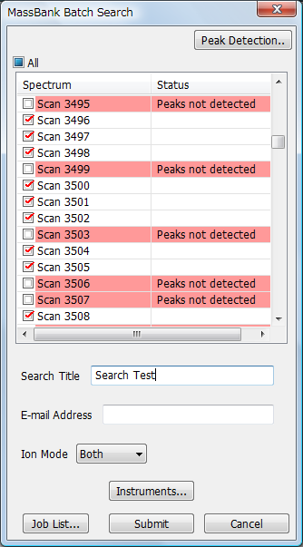

You can search multiple spectra against the MassBank database to find similar spectra.
While a spectrum, chromatogram or heatmap is displayed, Select [Tools] in the menu bar and then select [MassBank] > [Batch Search] from the drop down menu.
The MassBank Batch Search dialog appears.
Check the spectra you want to submit for searching and edit the values for [Search Title], [E-mail Address] and [Ion Mode]. Click [Instruments] to edit the instrument list.
Click [Submit] to submit the batch job.
If one or more spectra whose peaks are not detected are checked, the Peak Detection dialog appears. Select a peak detection algorithm and click [OK].
Then the MassBank Job List dialog appears. (Refer to the section called ÅgBatch Job ListÅh.)

It might take several minutes or several hours for completion of batch search jobs. When each batch job is completed, an email is sent to the input email address.